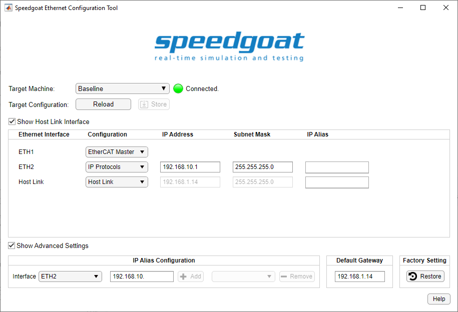

MQTT Usage Notes — Detailed information about the MQTT protocol and the native MQTT blockset
MQ Telemetry Transport (MQTT) is an open communication protocol used mainly for machine to machine (M2M) communication in IoT networks. The protocol is based on TCP/IP and follows a publish-subscribe architecture. A client (Publisher) sends data for a specific topic to the broker, which then passes the data to the other clients (subscribers) that subscribed that topic. MQTT allows fast and efficient data transfer, made possible by both the small protocol header and transmission not requiring periodic requests. MQTT is supported on the real-time target machines’ native Ethernet interfaces and over Ethernet I/O modules. The MQTT protocol stack runs on the target machine's CPU. Simulink driver blocks for client operation are available.
For further information about MQTT, please read the MQTT Online Reference: https://mqtt.org/.
Use the Ethernet Configuration Tool to assign IP addresses the target machine's Ethernet interfaces. Enter the following in the MATLAB command window to open the tool:
>> speedgoat.configureEthernet

For MQTT, you can use any Ethernet interface when Configuration is set to IP Protocols.
One real-time target machine can run multiple MQTT clients. There are 3 possible configurations:
One IP address is assigned to one Ethernet interface. This Ethernet interface acts as one MQTT client in the network. You can install multiple Ethernet I/O modules (providing up to 4 interfaces each) or use additional onboard Ethernet interfaces to set up multiple MQTT clients. As all the Ethernet interfaces of a target machine must be associated with different Ethernet subnets, each MQTT client must operate in another Ethernet network. If an application requires multiple clients to communicate with different MQTT networks, then this target configuration is the correct choice.
The subnet dedication of an Ethernet interface is defined by IP address and subnet mask.
IP aliasing can be used to assign multiple IP addresses to a single physical interface. This allows multiple MQTT clients to be operated on the same Ethernet I/O module or the same onboard Ethernet interface. As the related IP addresses are always associated with the same Ethernet subnet, this configuration is ideal for simulating an MQTT network containing multiple clients. Alias addresses can be configured in the advanced settings of the Ethernet Configuration Tool or by functions.
Enter the following in the MATLAB command window to manage IP aliasing:
>> ipAliasObj = speedgoat.IpAliasConfiguration()
>> ipAliasObj.add('ETH2', {'192.168.10.31','192.168.10.32','192.168.10.33'})
>> ipAliasObj.remove('ETH2', {'192.168.10.33'})
>> ipAliasObj.add('Host Link', {'192.168.1.15','192.168.1.19'})Enter the following in the MATLAB command window to check the available Ethernet interfaces and configured IP aliases:
>> ipAliasObj.show()
Interface Name IP Address Subnet Mask
--------------- --------------- ---------------
ETH2 192.168.10.1 255.255.255.0
192.168.10.31 255.255.255.255
192.168.10.32 255.255.255.255
192.168.10.33 255.255.255.255
Host Link 192.168.1.14 255.255.255.0
192.168.1.15 255.255.255.255
192.168.1.19 255.255.255.255
This is the normal operation for clients as each connection of the client to a broker requires a separate TCP port.
MQTT blocks require a runtime license installed on the target machine. Please refer to the Runtime Licensing help.